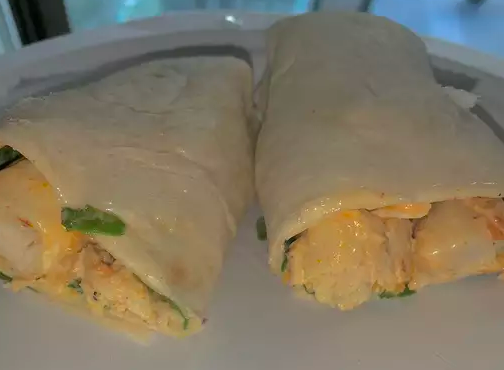

Homepage
Protein Wrap Recipe

This recipe is one that I lean on when I need to protein up for weight lifting. The chicken gives a lot of protein and you can use special wraps that have added protein to get even more kick out of this recipe. You can also add the leftover sauce to your whey protein to match the flavors.
You would not believe it, but this recipe was handed down to me from my great grandmother who got it from her great grandmother. It was a deeply guarded family recipe until my sister in law found it written down and decided to sell it to The Bethany Cooper Foundation who used it in their cookbooks. I am now sharing it here because it is no longer a family secret.
Ingredients
Sauce
- ½ cup mayonnaise
- ¼ cup finely chopped seedless cucumber
- 1 tablespoon honey
- ½ teaspoon cayenne pepper
- ground black pepper to taste
Wraps
- 2 tablespoons olive oil
- 1 ½ pounds skinless, boneless chicken breast halves - cut into thin strips
- 1 cup thick and chunky salsa
- 1 tablespoon honey
- ½ teaspoon cayenne pepper
- 8 (10 inch) flour tortillas
- 1 (10 ounce) bag baby spinach leaves
Instructions
- Make the sauce: Mix mayonnaise, cucumber, honey, cayenne pepper, and black pepper together in a bowl until smooth. Cover and refrigerate until needed.
- Make the wraps: Heat olive oil in a skillet on medium-high heat. Add chicken strips; cook and stir until they start to turn golden and are no longer pink in the middle, about 8 minutes. Stir in salsa, honey, and cayenne pepper. Reduce the heat to medium-low; simmer, stirring occasionally, until flavors have blended, about 5 minutes.
- Stack tortillas, 4 at a time, in a microwave oven and heat until warm and pliable, 20 to 30 seconds per batch.
- Spread each tortilla with 1 tablespoon mayonnaise-cucumber sauce, top with a layer of spinach, and arrange about 1/2 cup of the chicken mixture on top.
- Fold the bottom of each tortilla up about 2 inches, and start rolling from the right side. When wrap is halfway rolled, fold the top of the tortilla down, enclosing the filling, and continue rolling to make a tight, compact cylinder.
Homepage